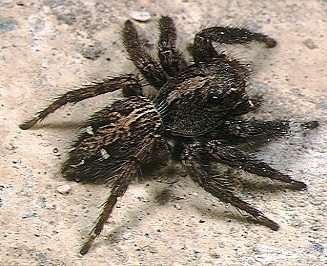

कूदने वाली मकड़ीPantropical Jumping Spider
Plexippus paykulli · Salticidae · SPD-0003

- Scientific name
- Plexippus paykulli (Audouin, 1826)
- Family
- Salticidae
- Hindi
- कूदने वाली मकड़ी / उछलती मकड़ी
- Status here
- native
- IUCN
- not evaluated
When to look कब देखें
Present all year.
कूदने वाली मकड़ी / Pantropical Jumping Spider
Plexippus paykulli (Audouin, 1826) — Salticidae
कूदने वाली मकड़ी — दीवारों, खिड़कियों, और पेड़-पत्तियों पर उछलती-कूदती छोटी-सी मकड़ी जो आपकी तरफ मुँह करके देखती है। नर का काला बदन और सफेद धारियाँ — तुरंत पहचान में आती है। जाला नहीं बनाती — शिकार को देखकर पास जाती है, रुकती है, फिर झपटती है। बड़ी-बड़ी आगे की आँखें इसे रंग और दूरी दोनों दिखाती हैं — भारत की सबसे तेज़ दृष्टि वाली मकड़ियों में से एक। दीवार पर मच्छर और मक्खी खाती है — बिना कीटनाशक के घरेलू कीट-नियंत्रण। पास जाइए धीरे से — यह पलटकर आपको देखेगी।
Quick Identification त्वरित पहचान
| Feature | Description |
|---|---|
| Size | Male 8–10 mm; female 10–12 mm — compact, box-shaped body |
| Male | Jet-black with bold white lateral stripes on abdomen; white spots at rear; legs banded black-white |
| Female | Brownish-grey with pale chevron pattern; less contrasted |
| Eyes | Two enormous forward-facing principal eyes — most diagnostic feature; turns to face observer |
| Movement | Short quick dashes; freezes; turns to face you; never builds a prey-catching web |
| Chelicerae | Iridescent blue-green in male (visible in direct sunlight) |
| Habitat | Walls, window sills, door frames, vegetation — ubiquitous on plastered surfaces |
Field tip: Approach any small spider on a white wall slowly — if it turns to face you with two large forward-pointing eyes, it is a jumping spider. The male's bold black-and-white pattern is unique among common wall spiders in UP. Watch for the leg-waving courtship display (male raising and waving front legs at female) on sunny morning walls, March–May.
Morphology आकारिकी
| Measurement | Range |
|---|---|
| Body length (female) | 10–12 mm |
| Body length (male) | 8–10 mm |
| Leg span (female) | 12–15 mm |
| Leg span (male) | 10–12 mm |
- Cephalothorax: Wide, box-like; covered with dense iridescent scales.
- Eyes: Eight total — two enormous forward-facing principal eyes (AME) giving stereoscopic colour vision; two large anterior lateral eyes (ALE) for wide-angle movement detection; four smaller posterior eyes giving near-360° coverage.
- Male: Black base colour; white longitudinal stripe on each side of abdomen; white superciliary stripe above eyes; legs boldly ringed black and white.
- Female: Brownish-grey; chevron pattern on abdomen; less contrasted than male.
- Chelicerae: Prominent, iridescent green-blue in certain light — species-characteristic metallic sheen.
- Legs: Leg I (first pair) robust, used in courtship display; legs III and IV used for jumping.
- Dragline silk: Always trails a safety line — jumps are never free-falls; the spider anchors its dragline before every leap.
Ecological Role पारिस्थितिक भूमिका
Active hunter — no web required. Plexippus paykulli is a pursuit predator that stalks prey visually, using high spatial resolution vision rivalling that of much larger animals. It detects movement at 30+ cm, identifies prey type and size, then executes a precise pounce — ecological analogue of a cat: slow approach, freeze, then explosive leap.
Generalist insectivore in human-dominated spaces. Preys on insects up to twice its own body size: flies, mosquitoes, moths, ants, beetles, and other spiders. In homes, walls, and gardens of eastern UP, this species is arguably the most effective non-chemical control of mosquitoes and flies on indoor and outdoor wall surfaces.
Predation of other spiders. Plexippus paykulli readily attacks and consumes other spider species — including individuals larger than itself — making it a top predator in the spider community of built environments.
Cognitive complexity. Salticid spiders show problem-solving behaviour and detour navigation — they plan multi-step routes to prey they cannot see directly. Plexippus is among the more studied species in this regard. The neuroscience of spider vision and cognition is an active research frontier.
Life Cycle / Phenology जीवन चक्र
- Year-round activity: Active all year in UP with reduced activity in cold months (December–January)
- Courtship: Male performs elaborate visual courtship — waves chelicerae, raises and vibrates forelegs (leg I), pivots, bobs abdomen in rhythmic display directed at female
- Mating: Female aggressive after mating — males retreat quickly
- Egg sac: Silk sac with 30–60 eggs; female guards it actively in a silken retreat on wall surfaces or behind furniture
- Incubation: ~2–3 weeks; female does not feed during guarding
- Spiderlings: Emerge miniature but capable of catching prey within days
- Maturity: 2–4 months from emergence; multiple generations per year
- Lifespan: 1–2 years
Host Plants or Prey आहार
Primary prey (visual hunters):
- Mosquitoes (Culicidae) — especially Culex spp. resting on walls
- House flies and blow flies (Muscidae, Calliphoridae)
- Moths (Lepidoptera) attracted to lights
- Ants — including workers of aggressive species
- Small beetles (Coleoptera)
- Other spiders — including Argiope and young Nephila
- Occasionally: small geckos have been reported to be ambushed
Predators / Natural Enemies शत्रु
- Ashy Prinia (Prinia socialis, BRD-0001) and Common Tailorbird (Orthotomus sutorius, BRD-0015) — primary avian predators; glean from wall surfaces
- House Gecko (Hemidactylus spp.) — pursues at night; competes for wall-surface prey space
- Parasitoid wasps (Pimpla spp.) — parasitise egg sacs; wasp larvae consume eggs
- Pompilid wasps (spider wasps) — paralyse adults and drag them to burrows as larval food
- Larger spiders — Nephila pilipes (SPD-0002) web occasionally captures wandering individuals
Agricultural / Human Relevance कृषि प्रासंगिकता
Beneficial household predator — pest control at no cost. Plexippus paykulli on indoor walls actively hunts mosquitoes, flies, and gnats. Given the high malaria and dengue burden in rural eastern UP, the ecological service of a spider that specifically targets resting mosquitoes on walls is genuinely significant. The spider's preference for wall surfaces — where Anopheles mosquitoes rest before and after feeding — places predator and prey in direct contact.
Cultural attitude — mixed. Many residents of Basti district regard wall spiders with mild discomfort or fear and sweep them off walls. Raising awareness that Plexippus is harmless to humans and beneficial for mosquito control is a direct conservation communication opportunity.
Not medically significant. Chelicerae too small to penetrate human skin effectively; venom harmless to humans. Can be handled safely.
Research model. The visual system of jumping spiders — their principal eyes with retinal scanning mechanism, colour vision including UV detection, and spatial reasoning — has made Salticidae the most studied spider family in behavioural and neurobiological research globally.
Expected Locally स्थानीय रूप से अपेक्षित
Not a field record. Written from published accounts for eastern Uttar Pradesh. No confirmed local sighting yet — if you have seen it, that is what the atlas needs.
अभी तक स्थानीय पुष्टि नहीं। यह विवरण प्रकाशित स्रोतों से है, किसी अवलोकन से नहीं।
Present year-round on walls, door frames, window sills, and outdoor plastered surfaces throughout Basti district. Particularly abundant July–October. Easily observed by approaching slowly — the spider will turn to track your movement with its forward-facing eyes. Courtship displays (male waving legs I at female) observable on sunny mornings March–May on south-facing walls. Egg sacs (white silk bundles) found in corners and behind furniture during summer months.
Distribution वितरण
Global range: Widespread throughout tropical and subtropical regions worldwide, including Africa, Asia, the Americas, and Europe.
In India: Ubiquitous across the entire country, occurring in both human-built environments and natural vegetation.
In Uttar Pradesh: Extremely common across the state, particularly on the walls of houses, buildings, and agricultural storage areas.
In Basti district / eastern UP: Resident year-round; most active during the warmer months from March to October. Found on plastered walls, door frames, and orchard foliage throughout the district.
Range notes: No significant range changes documented.
Research Questions शोध प्रश्न
- Does Plexippus paykulli actually target and consume Anopheles mosquitoes at frequencies that could contribute meaningfully to malaria vector reduction in rural Basti households — and can this be quantified by gut-content DNA analysis?
- Are there colour-vision differences between male and female Plexippus — do females evaluate male courtship based on UV-reflective patterns invisible to human observers?
- Do local wall populations show any adaptation to human structures — lighter colouring on whitewashed walls, different jumping distances on smooth surfaces?
- What is the population density of Plexippus per household wall area, and does it correlate with mosquito presence or absence?
- How do pesticide spraying campaigns for malaria control (pyrethroid indoor residual spraying) affect Plexippus populations — do they recover, and how quickly?
Similar Species मिलती-जुलती प्रजातियाँ
| Species | Key Difference |
|---|---|
| Plexippus petersi | Very similar; male has broader white abdominal band; subtle chelicerae differences; partly sympatric |
| Hyllus diardi | Larger (12–15 mm); brown with white spots; less boldly patterned |
| Telamonia dimidiata | Red and white banding; narrower abdomen; rarely on walls |
| Signature Spider (Argiope anasuja, SPD-0001) | Web-builder; much larger; abdomen yellow and black; never on walls |
Taxonomy & Classification वर्गीकरण
Original description. Plexippus paykulli was described by Jean Victoire Audouin in 1826 as Attus paykullii in Savigny's Description de l'Égypte, Vol. 22, page 172. Type locality: Egypt. The species was later transferred to the genus Plexippus C.L. Koch, 1846. The authority is therefore cited in parentheses as (Audouin, 1826).
Subspecies. Monotypic — no subspecies are currently recognised.
Family and order placement. Belongs to the order Araneae, family Salticidae (jumping spiders). The family Salticidae is the largest family of spiders, containing over 6,000 species (about 13% of all spider species). The genus Plexippus contains approximately 40 species globally.
Phylogenetic notes. Molecular studies place Plexippus in the plexippine clade of the subfamily Salticinae. Jumping spiders are characterized by their unique visual system, which has been shown to guide their complex hunting behaviors, including detour planning.
IUCN status rationale. This species has not been formally assessed by the IUCN Red List. As a synanthropic species that benefits from human housing and infrastructure, it is highly abundant and stable across its range.
Photo Gallery फोटो गैलरी
References संदर्भ
- Audouin, J.V. (1826). Explication sommaire des planches d'arachnides de l'Égypte et de la Syrie. In: Savigny, M.J.C. Description de l'Égypte, Vol. 22, 99–186.
- Tikader, B.K. (1974). Studies on some jumping spiders of the genus Plexippus Koch (family: Salticidae). Proceedings of the Indian Academy of Sciences, 79(3), 134–142.
- Zoological Survey of India (ZSI) — Araneae records, Uttar Pradesh.
- Harland, D.P. & Jackson, R.R. (2000). Cues by which Portia fimbriata spiders distinguish jumping-spider prey from other prey. Ethology, 106, 49–61.
- Nelson, X.J. & Jackson, R.R. (2006). Vision-based innate aversion to ants and ant mimics. Behavioral Ecology, 17(5), 676–681.
- GBIF Occurrence Data — Plexippus paykulli, Uttar Pradesh (2000–2024). GBIF taxon key: 2171214.
Source file: species/fauna/spiders/pantropical_jumping_spider.md